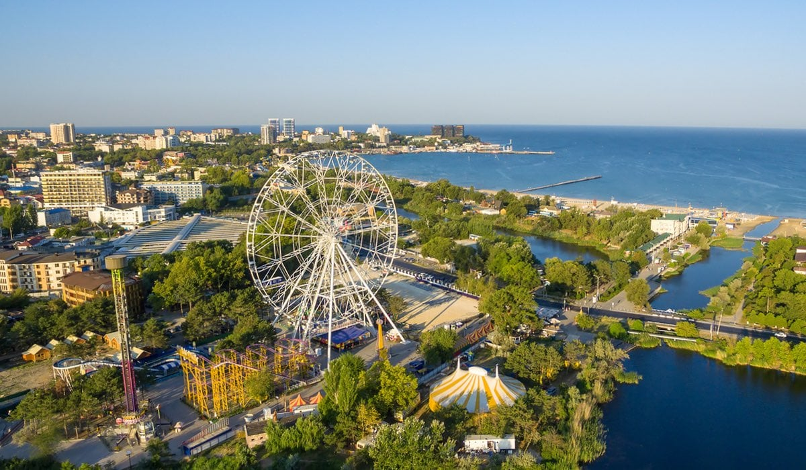
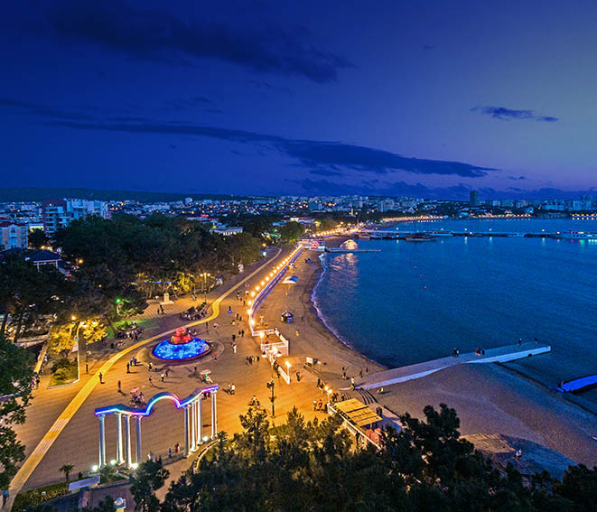

От Волги до Енисея
На данном сайте представлен краткий обзор на курортные города России
1.СочиДостопримечательности:
1.Сочи парк
2.Смотровая башня на горе Ахун
3.Мега музей СССР
4.Дача Сталина
Сочи – крупнейший и единственный в России субтропический курорт. Расположен на северо-восточном побережье Черного моря в Краснодарском крае на расстоянии 1620 км от Москвы. Имеет современную транспортную инфраструктуру, является крупным экономическим и культурным центром Юга России.

Подробный обзор:
2.АнапаДостопримечательности:
1.Маяк Анапский
2.Золотой пляж
3.Парк Ореховая Роща
4.Церковь Серафима Соровского
Анапа – черноморский российский курорт, расположенный в юго-западной части Краснодарского края, на стыке предгорий Кавказа и степей Таманского полуострова. Площадь региона составляет почти тысячу кв. км. Анапа – один из самых древних городов России.
Подробный обзор:
3.ГеленджикДостопримечательности::
1.Золотая бухта
2.Парк "Олимп"
3.Скала парус
4.Пшадские водопады
Геленджик – живописный город Краснодарского края, который находится вокруг бухты с одноименным названием. Он занимает первые строчки в рейтинге самых благоустроенных городов России. Благодаря культурным достопримечательностям, отличным пляжам и обилию развлечений он ежегодно привлекает туристов с разных концов земли.
Подробный обзор: